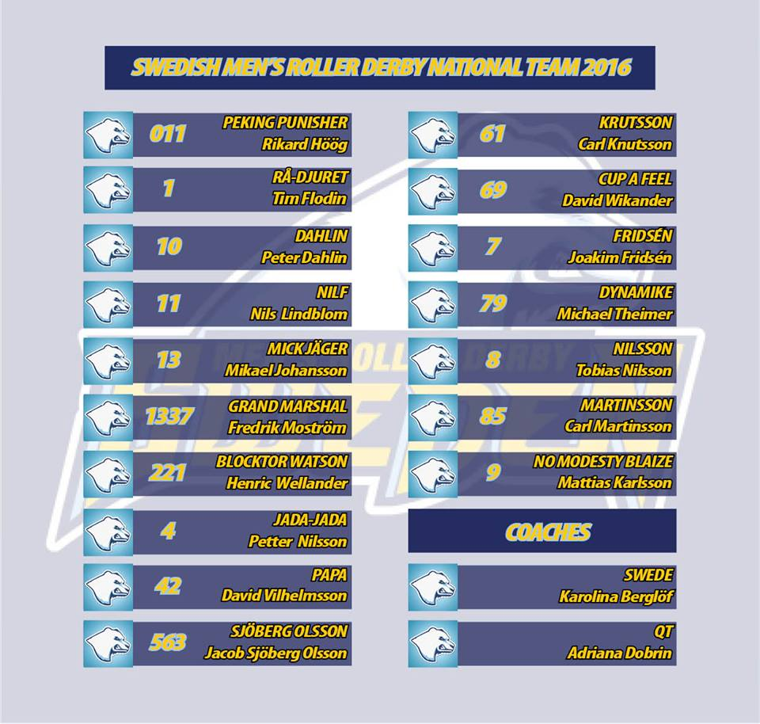

MRDWC 2016 Team Review: Swedish Men's Roller Derby
Today brings another addition to our Men's Roller Derby World Cup series, in the form of Swedish Men's Roller Derby! We talk to Krutsson #61 about how they've grown since the last MRDWC and how they are preparing for Calgary.

In the 2014 Men's Roller Derby World Cup, Sweden had a fairly difficult group, placed with England, Netherlands and Argentina. While they won convincingly against Argentina, England defeated them as easily as they defeated almost everyone else in the tournament, and a hard-fought game against the Dutch ended in defeat. In the lower bracket of the tournament, the Swedes couldn't stand against the Finns, or the Belgians, ending up in 14th position on the table.
This time around, Team Sweden resides in Group Orange, where they'll be facing England and Argentina again, along with new faces Chile and Italy. While England is a strong bet for the first of the two top spots in the group, it's hard to predict who could take the second - Sweden are certainly in with a good chance!
We talked to Krutsson (#61) about how they've grown since the last MRDWC and how they are preparing for Calgary.
How has your selection process this year differed from the selection of your last MRDWC team? Did you find that there were many factors that changed from the last selection after your experience in 2014? At the last MRDWC you came 14th out of 15th. With even more teams competing this year how do you think the experience of the 2014 World cup will shape how you play this year?
In 2014, we didn't really have to select skaters. We were just happy to be there. It was just a question about getting enough skaters, that met the requirements, on the roster. We were allowed to put skaters on the roster that hadn't passed the minimum skills test, with the condition that they passed them before the tournament. We managed to roster 14 skaters for Birmingham. This time we had a few skaters on an early stage that decided not to apply, due to various reasons, but who probably would have made the roster. We ended up selecting 17 skaters for Calgary, and we think they can perform at a pretty high level.
Compared to the last World Cup, how do you think your training schedule has evolved? Is there any new factors that you have in place that you hope will give you the edge in the competition?
In 2014, it was more about learning the basics. This time we have leagues that play roller derby games and scrimmages at a regular basis. We've got more experience and skills within the leagues and a stronger foundation to build on. The schedule is about the same but the focus is more on tactics, than actually learning the core basics of the game. The problem in Sweden is that we are pretty spread out and there is a lot of travelling involved to get the team together. We are still very few male skaters in Sweden compared to the number of female skaters. The teams competing under WFTDA in Sweden have taken a huge leap the last few years. Two teams qualified to WFTDA division 1 playoffs last year and the new national Swedish division play has helped spreading knowledge about the sport, and has really given the Swedish roller derby community a push forward. I think we have a strong roller derby community in Sweden with knowledge about high level roller derby and this time we have a team with skills enough to benefit from that. Now it's just about getting everyone's skills together for the men's national team. We have a good and experienced coach team to lead us too.
The last MRDWC was pretty close by compared to this year with a trip to Canada to prepare for! How have you been fundraising to get the team to Calgary?
We were a bit late in the start-up so most European teams had already made their game schedules, so we have had difficulties in finding opponents for games. So the fundraising will be mostly from selling merchandise having sponsors. The skaters will still have to pay a part themselves.
This year, your group is pretty mixed with quite a few new teams in the mix as well as the number 2 seed from 2014. Is there anyone in your group you're really excited to play?
We had both England and Argentina in our group in Birmingham in 2014. I think we are looking forward to those two games the most. England will be very difficult to beat. When we met them in Birmingham it was a complete blowout. They didn't even let us score a single point. Our performance against them will be better this time. I can promise you that much. Argentina played really well in Birmingham and we expect them to have improved. Our team captain played a in mixed team with some of them, against Team Italy, so we know a little about how they play. When it comes to Chile, we don't know much, but after the experience with Argentina last time we won't underestimate any South American team even if they show up with only 8 skaters.
Have you got any specific aims for Calgary that you would be willing to share? (Don't worry we understand if you have any secret plays you don't want to share just yet!)
We're aiming to end as high up in our group as possible. The key will be the game against Argentina. In Birmingham they beat us, but this time we come better prepared and we think we can give them a real challenge.

Sweden's first fixture will be against Team England at 12:00 local time. For the full schedule please visit http://mrdwc.com/schedule-2016/ .